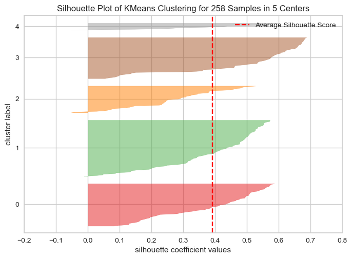
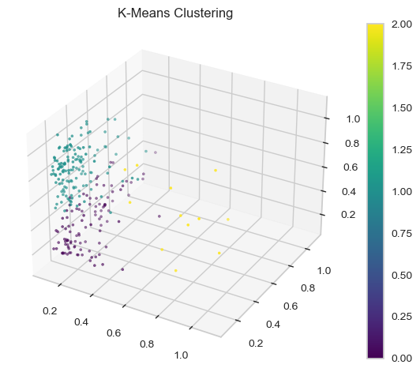

Code
import numpy as np
import pandas as pd
import seaborn as sns
import matplotlib.pyplot as pltThe data set that will be used for clustering analysis is from the Bureau of Labor Statistics. This data set is a combined data set of employment and wages based on occupation (that was used in the Decision Tree and Random Forest classification sections) and employment based on occupation by sex. Our goal is to see how different occupations group up (or “cluster”) based on different features. Specifically, the features that we will use is the total employment, average annual mean, and the sex proportions in each occupation (i.e. what percentage of the total employees in a specific occupation is men or women). For the specific code that achieved this data set, please refer to the data cleaning section.
Clustering is an example of an unsupervised machine learning algorithm that attempts to discover if the data forms “clusters,” and as the name suggests, clustering attempts to group similar data points in a data set together. This is especially handy when there are no known relationships in the data; however, even if the data already has corresponding labels, using the algorithm may reveal new clusters, which suggests that there may be unknown groups in the data that aren’t captured in the pre-existing labels (which will be especially relevant for our data set, since it already has associated labels).
There are multiple clustering methods. The first is K-means clustering, which attempts to split the data into “K” clusters around a centroid (or the center of a cluster). The K-means algorithm focuses on minimizing the differences within a cluster while maximizing the differences between clusters. Another algorithm is Density-Based Spatial Clustering of Applications with Noise (DBSCAN), which clusters based on how closely together points are located (hence “density”). As such, this algorithm groups highly dense (closely packed) points together separate from outliers that lie in sparsely dense areas. Lastly, hierarchical clustering works by grouping the data points to produce nested clusters, represented as trees. This method can either take a top-down (Division) or bottom-up (Agglomerative) approach. The former starts with one big cluster of all the data points, which is broken down into smaller and smaller clusters, while the latter does the opposite (i.e. start with individual data points and build up into clusters).
The aforementioned algorithms all mention grouping the data points into clusters. Naturally, this leads us onto our next point of finding out what actually is the optimal number of clusters. The first is the Elbow Method, which finds the corresponding inertias for a varying number of clusters. As the number of clusters increase, the inertia also decreases, so it is our job to decide the best cluster-to-inertia trade-off point (i.e. attempt to minimize both inertia and the number of clusters). An alternative is the Silhouette Method, which shows how distant a cluster is from other clusters. The silhouette coefficients range from -1 to 1, with -1 indicating bad clustering (i.e. a data point may have been assigned to the wrong cluster), 0 indicating clusters being very close to each other, and 1 indicating clusters that are far from each other.
import numpy as np
import pandas as pd
import seaborn as sns
import matplotlib.pyplot as pltdf=pd.read_csv('./data/01-modified-data/occupations_detailed_(employment_by_sex_and_wage).csv')
## drop unneeded column created from read_csv
df = df.iloc[:, 1:]## reorder columns
df = df[['TOT_EMP', 'A_MEAN', 'Women (%)', 'Men (%)', 'Target', 'Target_Num', 'OCC_TITLE']]
## rename columns
df = df.rename(columns={'TOT_EMP':'Total Employment', 'A_MEAN':'Mean Annual Wage'})As we can see, we have a heavily imbalanced data set.
df['Target'].value_counts(ascending=True)Farming, Fishing, and Forestry Occupations 1
Life, Physical, and Social Science Occupations 2
Educational Instruction and Library Occupations 2
Legal Occupations 4
Healthcare Support Occupations 6
Building and Grounds Cleaning and Maintenance Occupations 6
Protective Service Occupations 7
Architecture and Engineering Occupations 9
Community and Social Service Occupations 10
Construction and Extraction Occupations 10
Food Preparation and Serving Related Occupations 10
Personal Care and Service Occupations 10
Installation, Maintenance, and Repair Occupations 11
Computer and Mathematical Occupations 11
Arts, Design, Entertainment, Sports, and Media Occupations 13
Sales and Related Occupations 13
Transportation and Material Moving Occupations 14
Production Occupations 16
Business and Financial Operations Occupations 19
Management Occupations 23
Healthcare Practitioners and Technical Occupations 26
Office and Administrative Support Occupations 35
Name: Target, dtype: int64We perform some pre-processing to ensure the best clustering results. First, we isolate the features in our data set, which are Total Employment, Average Annual Wage, % of Women in the occupation, and % of Men in the occupation.
X = df.iloc[:, 0:4]Since our predictors (X) consist of values that are outside the ideal range of [0, 1], we first normalize our data to bring all the predictor values into a space that is unitless. This transformation of data brings everything to a similar scale, which makes it easier for the classifiers to “learn” the data.
X=0.1+(X-np.min(X,axis=0))/(np.max(X,axis=0)-np.min(X,axis=0))The correlation output below shows an inverse correlation (= -1) between % of Women in the occupation and % of Men in the occupation (which is to be expected). Since we need to maintain independence among the predictor variables, I will drop % of Men in the occupation (Men (%)) to prevent the model from overcounting similar features.
corr = X.corr()
print(corr) Total Employment Mean Annual Wage Women (%) Men (%)
Total Employment 1.000000 -0.102376 0.071952 -0.071952
Mean Annual Wage -0.102376 1.000000 -0.201373 0.201373
Women (%) 0.071952 -0.201373 1.000000 -1.000000
Men (%) -0.071952 0.201373 -1.000000 1.000000The correlation matrix heatmap below as well as the multivariable pair plots reflect the previous correlation output. Again, there is an inverse correlation between employment percent relative standard error (EMP_PRSE) and mean annual salary percent relative standard error (MEAN_PRSE).
sns.set_theme(style="white")
f, ax = plt.subplots(figsize=(11, 9)) # Set up the matplotlib figure
cmap = sns.diverging_palette(230, 20, as_cmap=True) # Generate a custom diverging colormap
# Draw the heatmap with the mask and correct aspect ratio
sns.heatmap(corr, cmap=cmap, vmin=-1, vmax=1, center=0,
square=True, linewidths=.5, cbar_kws={"shrink": .5})
plt.show();sns.pairplot(df.iloc[:,0:5], hue='Target')
plt.show()X.drop(columns=['Men (%)'], inplace=True)X = np.ascontiguousarray(X)
NDIM = X.shape[1]
## helper functions
import sklearn.cluster
# THIS WILL ITERATE OVER ONE HYPER-PARAMETER (GRID SEARCH)
# AND RETURN THE CLUSTER RESULT THAT OPTIMIZES THE SILHOUETTE SCORE
def maximize_silhouette(X,algo="birch",nmax=15,i_plot=False):
# LOOP OVER HYPER-PARAM
params=[]; sil_scores=[]
name = algo
sil_max=-10
for param in range(2,nmax+1):
if(algo=="birch"):
name = "Birch"
model = sklearn.cluster.Birch(n_clusters=param).fit(X)
labels=model.predict(X)
if(algo=="ag"):
name = "Agglomerative"
model = sklearn.cluster.AgglomerativeClustering(n_clusters=param, linkage='ward').fit(X)
labels=model.labels_
if(algo=="dbscan"):
name = "DBSCAN"
param=0.5*(param-1)
model = sklearn.cluster.DBSCAN(eps=param).fit(X)
labels=model.labels_
if(algo=="kmeans"):
name = "K-Means"
model = sklearn.cluster.KMeans(n_clusters=param, random_state=1234).fit(X)
labels=model.predict(X)
if(algo=="ms"):
name = "Mean Shift"
model = sklearn.cluster.MeanShift().fit(X)
labels=model.predict(X)
try:
sil_scores.append(sklearn.metrics.silhouette_score(X,labels))
params.append(param)
except:
continue
if(sil_scores[-1]>sil_max):
opt_param=param
sil_max=sil_scores[-1]
opt_labels=labels
print("OPTIMAL PARAMETER =",opt_param)
print("Silhouette Coefficient =",sil_max)
if(i_plot):
fig, ax = plt.subplots()
ax.set_title("Silhouette Scores based on # of Clusters (%s)" % name)
ax.plot(params, sil_scores, "-o")
ax.set(xlabel='Hyper-parameter', ylabel='Silhouette')
plt.show()
return opt_labels
def plot(x,opt_labels,title=''):
if(NDIM==2):
fig, ax = plt.subplots()
sp=ax.scatter(x[:,0], x[:,1],c=opt_labels,marker=".", cmap="viridis")
plt.colorbar(sp)
if(NDIM==3):
fig = plt.figure()
ax = fig.add_subplot(projection='3d')
sp=ax.scatter(x[:,0],x[:,1],x[:,2],c=opt_labels,marker=".", cmap="viridis")
plt.colorbar(sp)
#DO PCA TO VISUALIZE
if(NDIM>3):
from sklearn.decomposition import PCA
pca = PCA(n_components=3)
pca.fit(x)
Y=pca.fit_transform(x)
fig = plt.figure()
ax = fig.add_subplot(projection='3d')
sp=ax.scatter(Y[:,0],Y[:,1],Y[:,2],c=opt_labels,marker=".", cmap="viridis")
plt.colorbar(sp)
plt.title(title)
plt.show()
## ref: https://notebook.community/DistrictDataLabs/yellowbrick/examples/gokriznastic/Iris%20-%20clustering%20example
from yellowbrick.cluster import SilhouetteVisualizer
def plot_silhouette(X,nmax=10):
for param in range(2,nmax+1):
model = sklearn.cluster.KMeans(n_clusters=param, random_state=1234).fit(X)
silhouette = SilhouetteVisualizer(model)
silhouette.fit(X)
silhouette.show() The plot below shows the silhouette coefficient for varying numbers of clusters. The silhouette coefficient peaks at k=3, which would be our optimal number of clusters.
# KMEANS
opt_labels=maximize_silhouette(X,algo="kmeans",i_plot=True)OPTIMAL PARAMETER = 3
Silhouette Coefficient = 0.4660805083484633The silhouette plots below also show similar results with the silhouette scores peaking when k=3.
plot_silhouette(X, nmax=6)
Given the optimal hyperparameter, we cluster our data below with K-Means.
plot(X,opt_labels,"K-Means Clustering")
DBSCAN hyperparameter tuning is slightly different from K-Means and Hierarchical, which focuses on the number of clusters. Rather, DBSCAN parameter optimization relies on epsilon (EPS), which dictates how close points have to be to each other to be considered a part of a cluster, and min_samples, which dictates how many points are needed to form a cluster.
The plot below shows the number of data points in our data set and varying epsilon values. Epsilon in the plot below is labeled as “Distance,” since epsilon is a measure of maximum distance between two points that are in the same cluster. Here, we’re looking for the point of maximum curvature, which seems to be around eps=[0.15, 0.2].
# Finding optimal EPS
## ref: https://towardsdatascience.com/how-to-use-dbscan-effectively-ed212c02e62
model = sklearn.neighbors.NearestNeighbors()
model = model.fit(X)
distances, indices = model.kneighbors(X)
distances = np.sort(distances[:,4], axis=0)
fig = plt.figure(figsize=(5, 5))
plt.plot(distances)
plt.title("EPS Tuning")
plt.xlabel("Points")
plt.ylabel("Distance")Text(0, 0.5, 'Distance')To get the precise eps value, we perform the elbow (or knee, in this case) method to find the point of maximum curvature, which is around 0.147.
from kneed import KneeLocator
i = np.arange(len(distances))
knee = KneeLocator(i, distances, S=1, curve='convex', direction='increasing', interp_method='polynomial')
fig = plt.figure(figsize=(5, 5))
knee.plot_knee()
plt.title("EPS Tuning (with knee point)")
plt.xlabel("Points")
plt.ylabel("Distance")
eps = distances[knee.knee]
print(eps)0.14666469356034625<Figure size 500x500 with 0 Axes>Below, we take the natural log of the total number of observations in our data set to get the number of min_samples.
# Finding optimal min_samples
## ref: https://stackoverflow.com/questions/12893492/choosing-eps-and-minpts-for-dbscan-r
min_samples = round(np.log(df.shape[0]))We then create the DBSCAN model with our optimal parameters and get a respectable silhouette coefficient.
model = sklearn.cluster.DBSCAN(eps=eps, min_samples=min_samples).fit(X)
opt_labels=model.labels_
sklearn.metrics.silhouette_score(X,opt_labels)0.34011471243009594Given the optimal hyperparameters, we cluster our data below.
plot(X,opt_labels,'DBSCAN Clustering')The plot below shows the silhouette coefficient for varying numbers of clusters. The silhouette coefficient peaks at k=4, which would be our optimal number of clusters.
# AGGLOMERATIVE CLUSTERING
opt_labels=maximize_silhouette(X,algo="ag",i_plot=True)OPTIMAL PARAMETER = 4
Silhouette Coefficient = 0.4346902641411452Given the optimal hyperparameter, we cluster our data below with Agglomerative clustering.
plot(X,opt_labels,'Agglomerative Clustering')We can also represent the optimized Agglomerative clustering as a tree, with the purple line representing a “cutoff” point for the optimal number of clusters.
from scipy.cluster.hierarchy import dendrogram, linkage
link = linkage(X, method='ward')
dend = dendrogram(link)
plt.axhline(c='purple',linestyle='--', y=2.5)
plt.title("Euclidean Distance Dendogram")
plt.xticks([]) # clear clutter from x axis ticks([], [])Based on the final results for the three methods, the optimal number of clusters for DBSCAN, K-Means, and Hierarchical were 2, 3, and 4, respectively. Based on the silhouette coefficients across the three clustering algorithms, K-Means performed the best with the highest silhouette coefficient of 0.466, followed by Hierarchical with a coefficient of 0.435, and then DBSCAN with a coefficient of 0.340. In terms of setting up the models and the respective visualizations, K-Means was by far the most straightforward, followed by Hierarchical, and then DBSCAN. Interestingly, despite the ease of set up, this is the exact order of the silhouette coefficients as well.
None of the algorithms were able to completely accurately create optimal cluster predictions that coincided with the “Target” values we had in the data set; nonetheless, this reveals some new insights regarding our data. Firstly, the clustering results, especially the results from K-Means and Hierarchical clustering, seems to suggest that there are largely 3 or 4 major industries that most occupations fall under. Secondly, based on the results from DBSCAN, it seems that most jobs, when clustered based on total employment, annual mean wages, and female participation, cluster together.
The data with which the clustering was conducted is heavily imbalanced. Occupation categories (labeled as “Target” in the data set) ranged from having a single occupation in a larger category all the way up to 35 occupations. Hence, model improvements definitely could be seen if we had a more balanced data set. Nonetheless, our clustering results reveal some new insights regarding our data. Upon closer inspection of our original data set (from the “Numerical EDA” section in the Methods section) in tandem with our clustering results, these industries seem to be Service, Labor, Professional, and Arts.